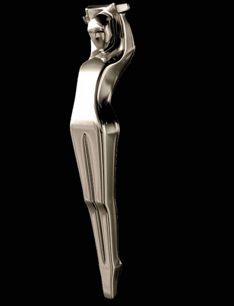
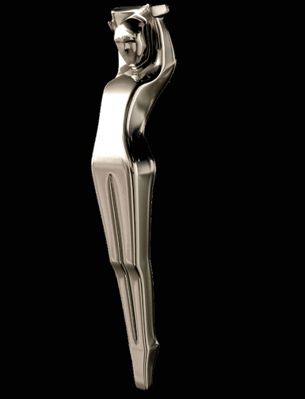

Photographers are artists with the camera,
using a blend of technical skills and an
artistic eye to take pictures of people, places,
landscapes, food, you name it. Photographers can work as fine artists,
wedding and event photographers, or sell their photos to commercial clients.
 
